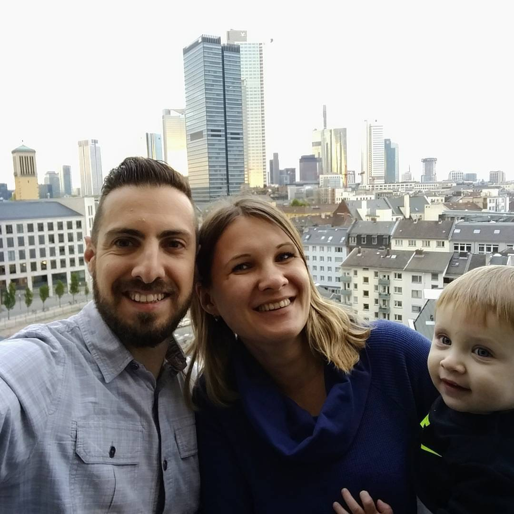

Mis inicios
Nací el 5 de noviembre en la Habana, Cuba. Soy hija única y mis padres son de nacionalidad cubana. Me crié en un reparto en las afueras de la Habana. Mi vida transcurrió en un ambiente comunista, lleno de limitaciones y en una familia totalmente contraria al régimen. A pesar de todas las dificultades, me desarrollé como cualquier niña de mi edad y fui una estudiante ejemplar.
Exilio:
En el año 1980, después de muchos contratiempos, mi familia y yo logramos emigrar a los Estados Unidos a través de la flotilla del Mariel. A pesar de una adaptación difícil debido a la barrera del idioma, me integré al sistema educativo y logré sacar adelante mi carrera en computadoras. A pesar de que mi trabajo se desarrolla en un ambiente técnico, me gusta mucho escribir y mi sueño es publicar un libro en el futuro. Comencé a tomar clases nuevamente en el 2013 y mi deseo es completar mi carrera en letras y lograr mis sueños de escritora.
Mi Familia:
Me casé con Julio Herrera, de nacionalidad argentina, en septiembre del 1983. Nuestro hijo único, Julio César, nació en febrero del 1985. Mi esposo falleció trágicamente en el año 2010, después de 26 años de compartir un matrimonio feliz. A partir de ese momento mi hijo se convirtió en mi razón de vida y estoy orgullosa de él pues es un muchacho ejemplar, un gran profesional, y un buen esposo y padre. Mi hijo sirvió en la fuerza aérea de los Estados Unidos por más de 10 años. Es veterano de Iraq y Afganistán. Ahora continúa sirviendo a su país como diplomático, empleado en el Departamento de Estado. En estos momentos está asignado en Argelia hasta el 2018. Está felizmente casado con Evgenya de nacionalidad rusa y es padre de una niña preciosa, mi nieta Sophia. Están esperando otro bebé que nacerá en diciembre.
Mis pasatiempos:
Me fascina compartir mi tiempo con amigos, soy alegre y disfruto del buen vino y la buena comida. Soy muy apasionada y romántica. Otras de mis pasiones es la cocina y el baile. Y además, me encantaría publicar un libro.